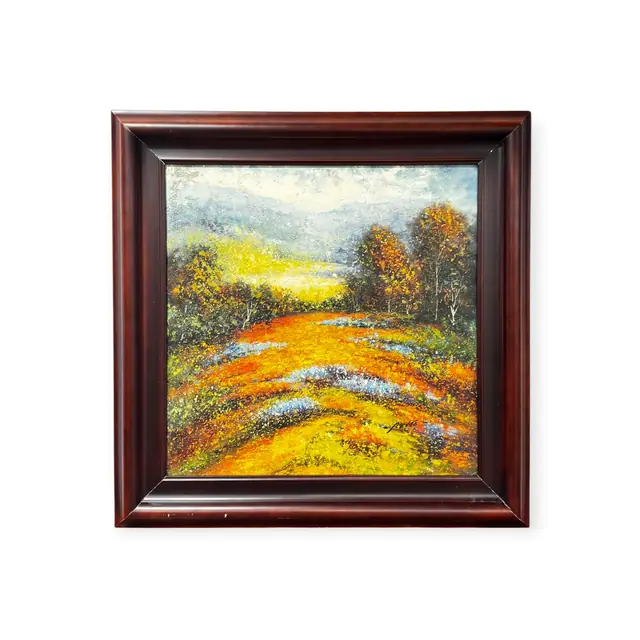
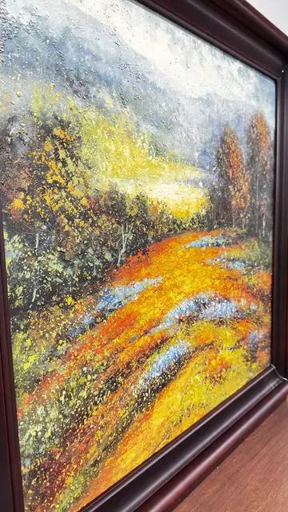

Paintings & Prints
Autumn Meadow With Flowering Slope, Signed, Framed
· late 20th - early 21st century
Price Upon Request


About the Item
A square canvas in which a broad slope of flowering meadow fills the lower two thirds, stippled in thousands of separate touches of orange, chrome yellow, olive and pale blue so that the field seems to shimmer. Behind it a screen of trees in russet and gold flanks a pale opening of light, and blue-grey hills dissolve into a high scumbled sky. The paint is dragged and dotted with the knife, leaving crusted ridges and small paint pearls across the entire surface. Medium: oil on canvas, palette-knife impasto. Signed lower centre right, across the yellow meadow. Condition: no visible issues; impasto intact.
Details
- Creation Year:
- late 20th - early 21st century
- Dimensions:
- Height: 39.25 in (99.7 cm)
Width: 38.5 in (97.79 cm)
outside of frame - Medium:
- oil on canvas, palette-knife impasto
- Period:
- 21St
- Condition:
- Offered in the condition shown in the photographs.
- Reference Number:
- VO-60
- Documentation:
- no certificate or label photographed